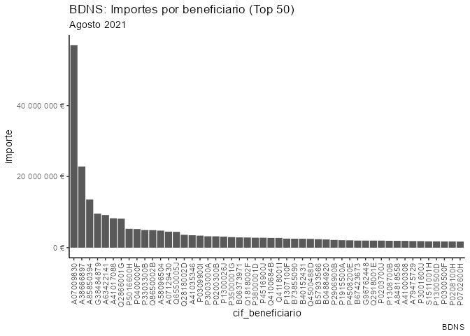

Aportación desde la comunidad de R para la extracción, limpieza y visualización de los datos del volcado de la Base de Datos Nacional de Subvenciones (BDNS). Github del proyecto global y comunitario puesto en marcha por Jaime Gómez-Obregón.
| GitHub | https://github.com/JaimeObregon/subvenciones |
| Discord | https://discord.com/invite/r2ytSa782D |
| Idea inicial | https://twitter.com/JaimeObregon/status/1507693311422877697 (hilo) |
Instalación
Puedes instalar el paquete desde GitHub con:
# install.packages("devtools")
devtools::install_github("dadosdelaplace/Rsubvenciones_spain",
ref = "rpak")Ejemplo
Carga convocatorias:
library(subvencionesES)
convocatorias <- carga_convocatorias()
convocatorias
#> # A tibble: 350,078 x 13
#> IDConv id mrr convocanteN1 convocanteN2 convocanteN3 fechareg titulo
#> <chr> <chr> <lgl> <chr> <chr> <chr> <date> <chr>
#> 1 819060 617500 FALSE DIPUTACIÓN P~ DIPUTACIÓN ~ <NA> 2022-03-25 ADQUI~
#> 2 819059 617499 FALSE REGIÓN DE MU~ INSTITUTO M~ <NA> 2022-03-25 MANCO~
#> 3 819058 617498 FALSE ONDA AYUNTAMIENT~ <NA> 2022-03-25 Conve~
#> 4 819057 617497 FALSE TORRENT AYUNTAMIENT~ <NA> 2022-03-25 SUBVE~
#> 5 819056 617496 FALSE REGIÓN DE MU~ INSTITUTO M~ <NA> 2022-03-25 AYUNT~
#> 6 819055 617495 FALSE ONDA AYUNTAMIENT~ <NA> 2022-03-25 Conve~
#> 7 819054 617494 FALSE TORRENT AYUNTAMIENT~ <NA> 2022-03-25 ASIGN~
#> 8 819052 617492 FALSE REGIÓN DE MU~ INSTITUTO M~ <NA> 2022-03-25 AYUNT~
#> 9 819051 617491 FALSE ONDA AYUNTAMIENT~ <NA> 2022-03-25 Conve~
#> 10 819050 617490 FALSE ARAGÓN INSTITUTO A~ <NA> 2022-03-25 CONVE~
#> # ... with 350,068 more rows, and 5 more variables: bbreguladoras <chr>,
#> # tituloleng <chr>, verConcesiones <lgl>, dummy1 <dbl>, dummy2 <dbl>Carga subvenciones (archivos jurídicas):
subvenciones <- carga_subvenciones()
subvenciones
#> # A tibble: 3,810,368 x 17
#> ID IDConv convocanteN1 convocanteN2 convocanteN3 convocatoria
#> <chr> <chr> <chr> <chr> <chr> <chr>
#> 1 65045185 811910 COMARCA COMUNIDAD DE ~ COMARCA DE ~ <NA> CONVOCATORI~
#> 2 65045222 811910 COMARCA COMUNIDAD DE ~ COMARCA DE ~ <NA> CONVOCATORI~
#> 3 65045266 811910 COMARCA COMUNIDAD DE ~ COMARCA DE ~ <NA> CONVOCATORI~
#> 4 65045280 811910 COMARCA COMUNIDAD DE ~ COMARCA DE ~ <NA> CONVOCATORI~
#> 5 65042893 818661 DIPUTACIÓN PROV. DE B~ DIPUTACIÓN ~ <NA> CONVOCATORI~
#> 6 65042591 818652 DIPUTACIÓN PROV. DE B~ DIPUTACIÓN ~ <NA> CONVOCATORI~
#> 7 65043828 749877 BURJASSOT AYUNTAMIENT~ <NA> CONCESIÓN Y~
#> 8 65044522 798146 BURJASSOT AYUNTAMIENT~ <NA> APROBACIÓN ~
#> 9 65053424 794733 LA RIOJA CONSEJERÍA ~ <NA> Ayudas proy~
#> 10 65053427 794733 LA RIOJA CONSEJERÍA ~ <NA> Ayudas proy~
#> # ... with 3,810,358 more rows, and 11 more variables: bbreguladoras <chr>,
#> # programa <chr>, fechaconc <date>, beneficiario <chr>, importe <dbl>,
#> # instrumento <chr>, ayudaequiv <dbl>, detalles <dbl>, proyecto <chr>,
#> # sancion <dbl>, numcov <dbl>Extrae el CIF a partir del texto del campo del beneficiario:
library(dplyr)
# Subvenciones en Agosto 2021
subvenciones_dic18 <- subvenciones %>%
filter(fechaconc >= "2021-08-01" & fechaconc <= "2021-08-31") %>%
extrae_cif() %>%
select(cif_beneficiario, importe)
resumen_top50 <- subvenciones_dic18 %>%
group_by(cif_beneficiario) %>%
summarise(importe = sum(importe)) %>%
arrange(desc(importe)) %>%
slice(1:50) %>%
mutate(cif_beneficiario = factor(cif_beneficiario, levels = cif_beneficiario))
library(ggplot2)
ggplot(resumen_top50, aes(x = cif_beneficiario)) +
geom_col(aes(y = importe)) +
scale_y_continuous(labels = scales::number_format(suffix = " €")) +
theme_classic() +
theme(axis.text.x = element_text(angle = 90, hjust = 1, vjust = 0.5)) +
labs(
title = "BDNS: Importes por beneficiario (Top 50)",
subtitle = "Agosto 2021",
caption = "BDNS"
)